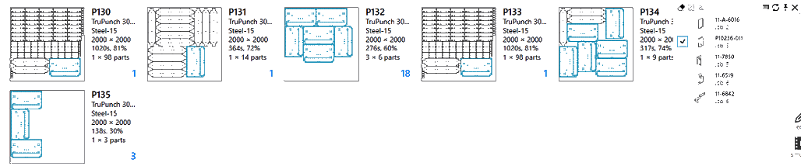

FELADAT oldal szűrő
A Feladat oldal szűrő megkönnyíti a Feladatok, Aktív alkatrészek és Táblatervek keresését a következő kritériumok alapján:
-
Rendelési kritériumok, mint például a prioritás, a határidő, az ügyfél, a megrendelt alkatrész és amennyiség srb.
-
Tervezési/ütemezési állapot, például a beütemezett gépek, kivitelezendő lemeztáblák, befejezett lemeztáblák, táblásított alkatrészek, táblásított elrendezések stb.
-
Táblatervkészítési tulajdonságok, mint például a táblatervkészítés hatékonysága, a nyersanyag, az egyedi és összes alkatrészek, feladatazonosítók és darabszámok.

Mintaszűrők
Alkatrész/elrendezés neve
Az Alkatrész neve mező a Feladatok és a Táblatervészítések oldalon jelenik meg. A keresési szöveg beírása után a rendszer felsorolja az összes lemeztáblát/feladatot, amely tartalmazza a keresési kifejezésnek megfelelő alkatrészeket.

Ha kiválasztja a találati listából az elemeket, a keresés a kiválasztott alkatrész(ek)re szűkül.
 Ez a viselkedés a Feladatok oldalra is érvényes. A Feladat oldalon a keresés az Alkatrész neve és az Elrendezés neve alapján végezhető. Az Alkatrésznév mezőhöz hasonlóan a elrendezésekhez is megjelenik egy javaslatlista.
Prioritás és határidő
A prioritások és a határidők egy munkához tartozó alkatrészhez vannak hozzárendelve. A Prioritás mező, hasonlóan a „Alkatrész neve” mezőhöz, lehetővé teszi a felhasználók számára, hogy magasabb prioritású alkatrészeket tartalmazó táblaterveket/feladatokat keressenek. A magas prioritású alkatrészeket a javaslat menüben az egérrel kijelölve helyezheti el egy táblatervbe. Hasonlóképpen, a meghatározott határidővel rendelkező alkatrészekre is rá lehet keresni egy táblatervben a kiemelés funkció segítségével.

Az előre meghatározott határidő-szűrők (pl. Ma, Tegnap, Holnap stb.) mellett a keresőmezőbe egyéni dátumértékeket/tartományokat is beírhat yymmdd formátumban. A dátumra vonatkozó elfogadható kifejezések:
-
Kifejezések (egyenlőtlenségi) egyenlőségi műveleti jelekkel (<, <=, >, >=, =), amelyeket a dátumérték követ. Például: >=220121 az összes olyan elemre rákeres, amelynek esedékessége 2022. január 21. vagy azután várható.
-
Dátumtartomány kifejezések, mint az alábbi ábrán. Minden olyan táblatervre rákeres, amely 2022. január 28-án vagy azt követően, illetve 2022. január 30-át megelőzően esedékes.

Használt szerszámok
Az Alkatrész könyvtárhoz hasonlóan a táblatervek is kereshetők a használt stancolószerszámok szerint. A használt szerszámok szerinti kereséshez:
-
Válassza ki a Használt szerszámok mezőt a rendelkezésre álló szűrő oszlopok közül. JFY Plus az összes rendelkezésre álló használt szerszám listáját jeleníti meg.
-
Általában ez egy hosszú lista, ezért használjon keresési kifejezéseket, például a szerszám nevét, alakját, méretét stb., hogy leszűkítse a listát a keresett szerszámra.
-
Válasszon ki egy vagy több elemet a listából, hogy kiszűrje azokat az alkatrészeket, amelyekhez ezek a szerszámok használatosak. A részletek nézetre váltáskor a használt szerszámok kiemelten jelennek meg, a szimulációs nézetre váltáskor pedig ez ismét megjelenik a szerszámok előnézetében.

Mellékesen: Gyakran előfordul, hogy a szűrők listája elrejti a keresési tartalmat. Használat
Az átlátszóságot az Átlátszatlanság paranccsal lehet be- és kikapcsolni. Az átlátszóság a szűrőlistán bárhol a jobb egérgombbal is be- és kikapcsolható.